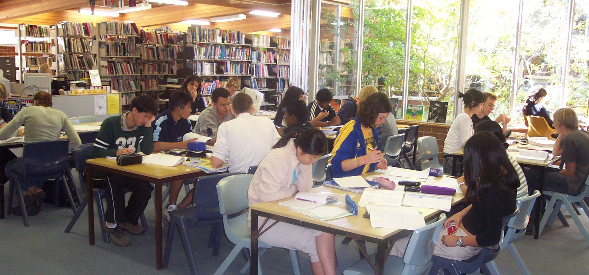
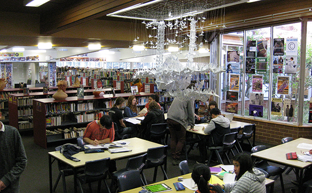

| Home | Block B | Block C | Block D | Block E | Block F | Block L | Block S | Switch CSS |
A BlockLocated at the heart of Narrabundah College, A Block serves as the central hub for students and staff alike. Stepping into this bustling section of the campus, visitors are greeted by the welcoming ambiance of the front office, a vital administrative space where students receive guidance and support. Beyond the front office lies the tranquil sanctuary of the college library, a haven for knowledge seekers and avid readers. Here, students immerse themselves in a world of literature, research, and academic exploration. A Block stands as a symbol of connectivity sand learning, bridging administrative functions with intellectual pursuits, making it an indispensable cornerstone of the Narrabundah College community. |
 |
|  |
Still A BlockNarrabundah College's A block stands as the nucleus of academic life, housing both the esteemed front office and the invaluable library. As the gateway to knowledge and administrative hub of the college, A block serves as a bustling center of activity, facilitating both the logistical operations and intellectual pursuits of students and faculty alike. At the forefront of A block lies the front office, a beacon of guidance and support for the college community. Here, dedicated staff members greet visitors with warmth and professionalism, offering assistance with enrolment, timetabling, and various administrative tasks. Students find solace in the accessibility of the front office, knowing that their concerns and queries are met with attentiveness and care. Adjacent to the front office, the library beckons with its shelves brimming with literary treasures and scholarly resources. A sanctuary for avid readers and diligent scholars, the library fosters an environment of quiet contemplation and academic exploration. From textbooks to novels, reference materials to digital databases, the library's extensive collection caters to the diverse interests and academic pursuits of students across disciplines. Within the confines of A block, the symbiotic relationship between administration and academia flourishes, exemplifying Narrabundah College's commitment to holistic education. Whether seeking guidance from the front office or delving into the realms of knowledge within the library's walls, students and staff find themselves enriched by the invaluable resources and support offered by this central hub of learning and community engagement. |